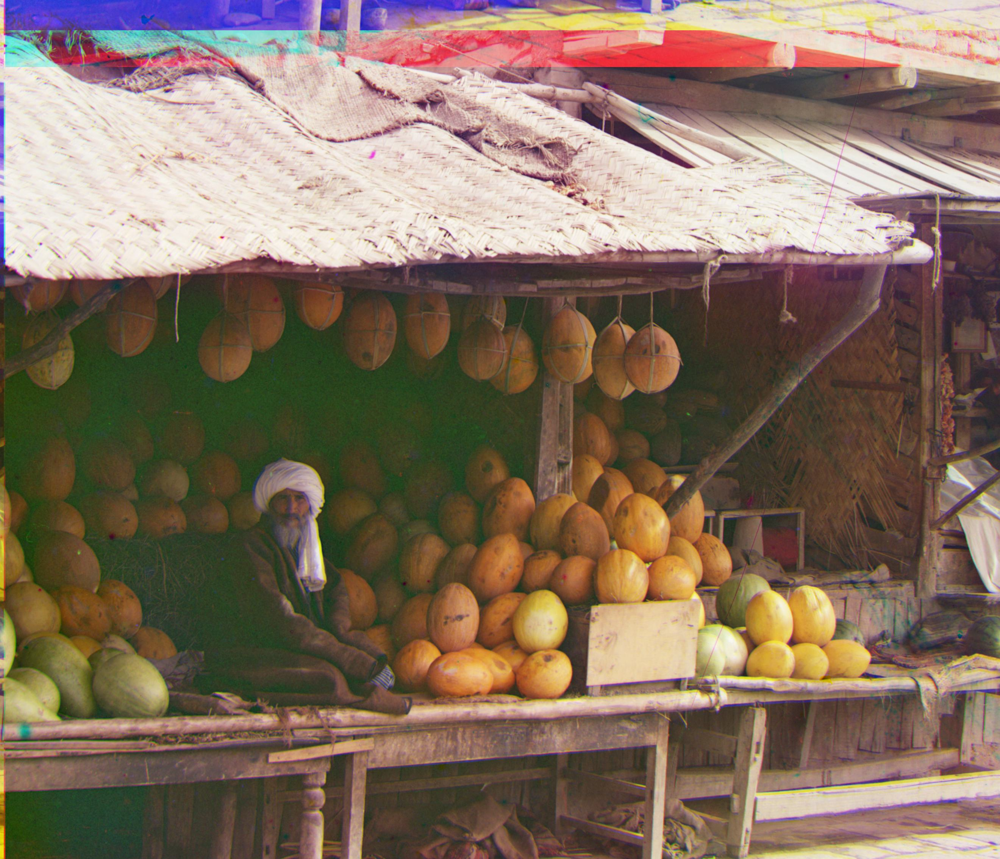
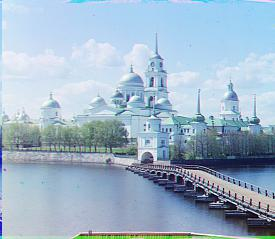

Maochuan Lu - CS180 Project 1
What did I do?
In this project, we aim to align RGB channels to produce color images. Here is my code documentation and idea:
- To align channels, we definitely need to move or shift a channel based on xy-displacement.
In this case, we create a helper function
shift(pic, x, y) using np.roll.
- We also need a metric to evaluate whether this shift can give us better alignment. I chose normalized cross-correlation for this metric, which is more robust to brightness.
- With
ncc and shift, we begin to implement our naive align function, which simply compares each possible shift in a window and returns the best shift with the best ncc score.
- However, with the naive alignment function, processing large pictures is quite slow. So we implemented a pyramid alignment function using recursion (an iterative one is quite slow).
- Firstly, we get our base case (level == 0) and simply return naive alignment at the final layer.
- Secondly, for other levels, we scale down pictures by a factor of 2, creating a pyramid of images at lower resolutions. Then it recursively calls
pyramid_align on images at the next level.
- After finding the best alignment at a lower resolution, we scale the current best alignment offsets by a factor of 2, since the previous level was downscaled by a factor of 2.
- Then we shift
pic1 based on these scaled offsets and refine the alignment by performing a final alignment at the current level using the align function.
- When finishing implementing the above function, our alignment for simple pictures like
cathedral.jpg looks great, but for images like emir.tif, it does not align well.
- After I checked the ed, a classmate suggested that using
feature.canny and cropping would be helpful, so I began to research what canny is and how to use it through Google.
- I then implemented the
manual_crop function, which simply scales down the height and width by a fixed percentage (e.g., 15%) to remove borders.
- Finally, I used the skeleton code to align channels processed by
canny and got their shifted coordinates. Then I applied these coordinates back to the original image and shifted them to get a full image.
- It works really well for all of the images!
Results

cathedral.jpg

church.tif

emir.tif

harvesters.tif
icon.tif

lady.tif

melons.tif

monastery.jpg

sculpture.tif
self_portrait.tif

three_generations.tif

tobolsk.jpg

train.tif
Back to CS180 Projects